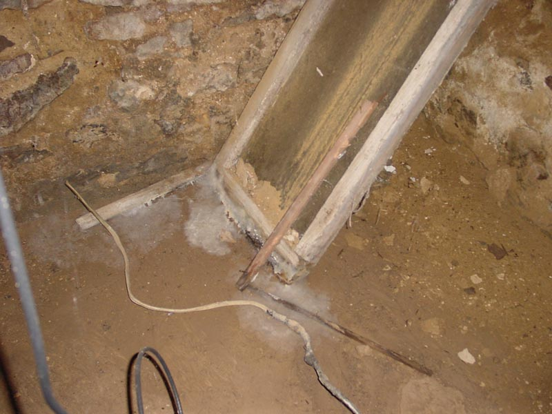

|  |
|
Now here is something that I positively know that Kevin doesn't have in his basement. An old window-pane cover leans against the wall. The damp wall, long having lost its plaster, slowly wicks moisture down onto the wood. It, in turn slowly channels it down and up from the damp floor. A positive haze of mold, slime and decay is available at the base of this item. Beat that! [ Look to the left side of the lesser hall | Back to the by the arch | Look right to the coal doors. ] |